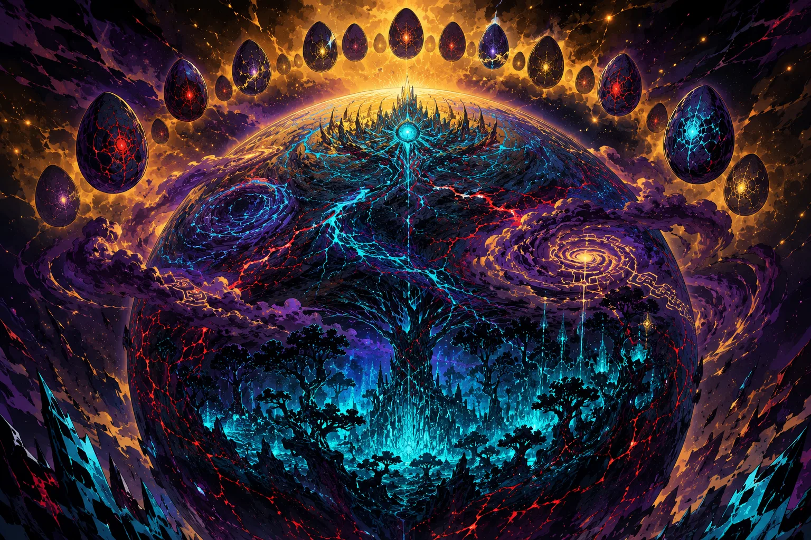

Stable Compendium record
mother
Peripheral dossier / Aureal Nebula
Mother
Living Drakken homeworld
- Stable ID
mother- Structural type
- character-section
- Canon status
- unknown
- Spoiler level
- major
Published source content
Canonical record
- Fixed living Drakken homeworld and hive-command ecology in the Aureal Nebula.
- Emerges from the unchecked/orphaned Notebook Program after Wordstreamer’s murder removes a major semantic safeguard.
- Drakken Eggs and strains are produced under Mother’s continuance logic; older Drakken can program eggs before hatching.
- During the first roughly two thousand years behind the Siege Wall, extreme material scarcity persists under Mother.
- Surviving Drakken eventually defeat Mother in an anti-fascist coup and fully break the hive-mind condition as a civilizational governing order.
- Mother’s exact physical state after defeat remains unspecified.
Visual reference
